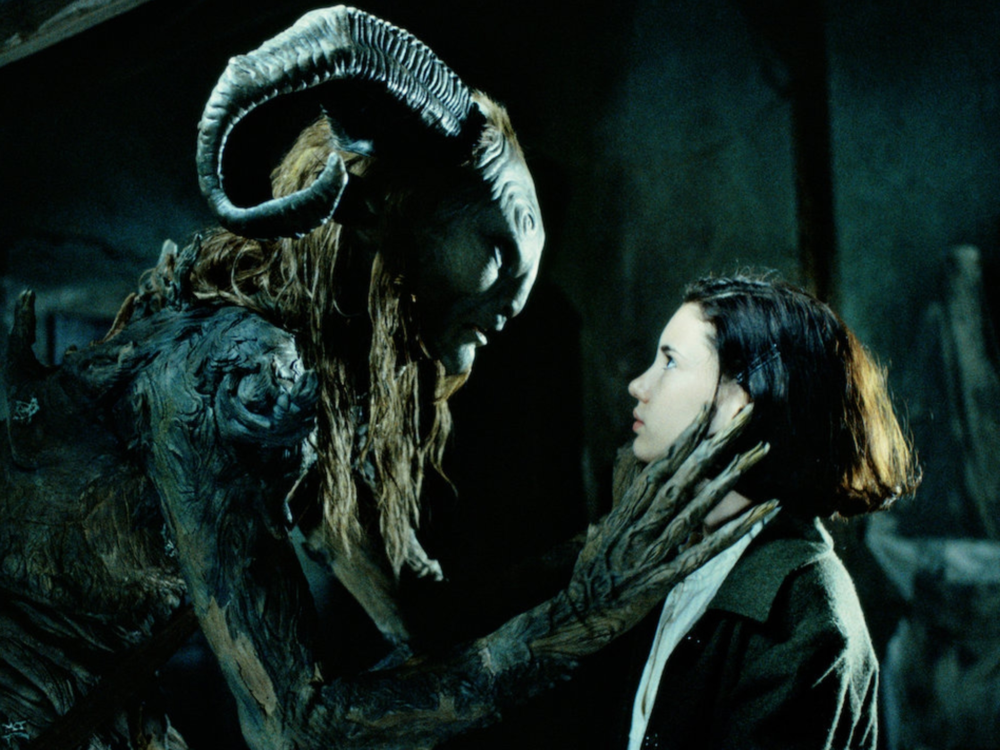

Historia
Situada en el año 1944, cuenta el apasionante viaje de Ofelia, una niña de 13 años que junto a su madre, Carmen (Ariadna Gil), convaleciente a causa de un avanzado estado de gestación, se traslada hasta un pequeño pueblo, en el que se encuentra destacado Vidal (Sergi López), un cruel capitán del ejército franquista, nuevo marido de Carmen y por el que Ofelia no siente ningún afecto. La misión de Vidal es acabar con los últimos vestigios de la resistencia republicana escondida en los montes de la zona. También ahí se haya el molino donde Vidal tiene situado su centro de operaciones, y en él les aguardan Mercedes (Maribél Verdú), una joven que se encuentra a cargo de los demás miembros del servicio, y el doctor (Alex Angulo), quien se hará cargo del delicado estado de salud de Carmen.
Una noche Ofelia descubre las ruinas de un laberinto donde se encuentra con un fauno (Doug Jones), una extraña criatura que le hace una increíble revelación: Ofelia es en realidad una princesa, última de su estirpe, a la que los suyos llevan mucho tiempo esperando. Para poder regresar a su mágico reino, la niña deberá enfrentarse a tres pruebas antes de la luna llena. En el transcurso de esta misión, fantasía y realidad se abrazan para dar rienda suelta a una maravillosa historia donde la magia que rodea a Ofelia nos transporta a un universo único, lleno de aventuras y cargado de emoción.
Escenas
El Hombre Pálido (escena completa) - "El laberinto del fauno" (2006)
Pan's Labyrinth end scene